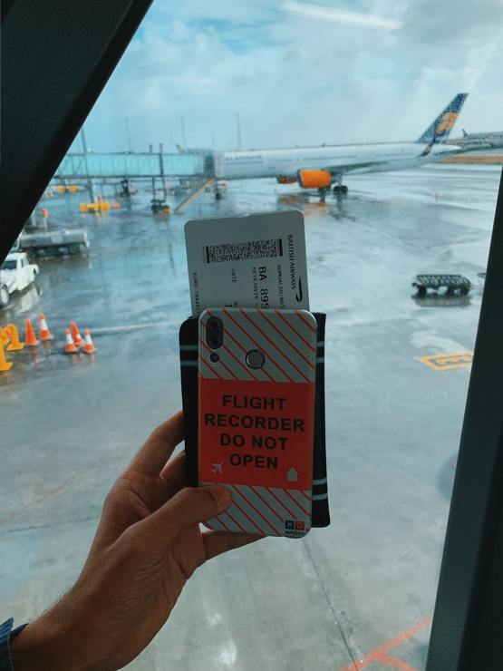
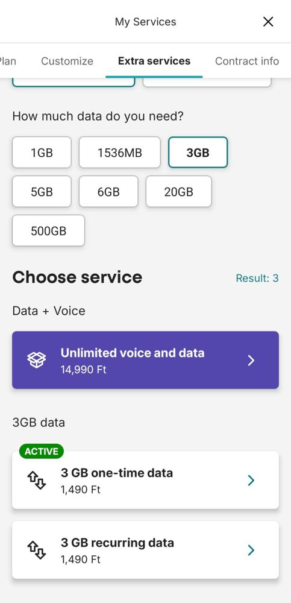
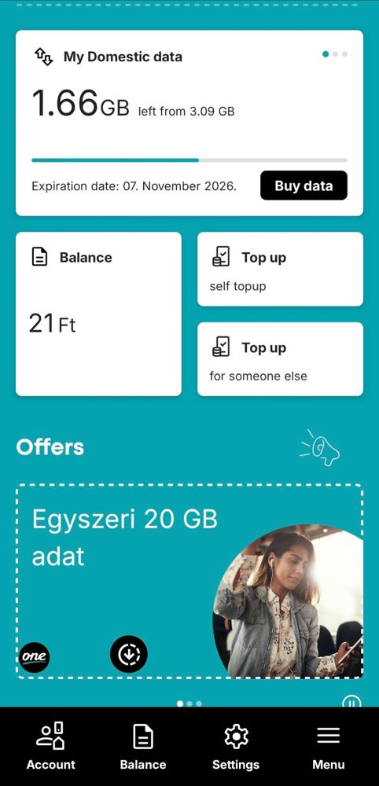
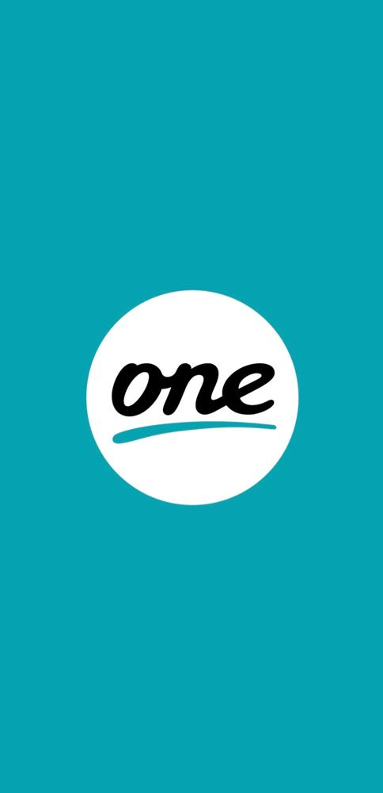

ハンガリー留学のスマホ・SIM事情！渡航初日のネット確保から月800円の通信費まで徹底解説【デブレツェン大学CS専攻】
みなさん、こんにちは。ハンガリー留学ラボのユウゴです！
海外に渡航する際、一番最初に直面する不安といえば「スマホのネット環境（通信周り）」ですよね。
「空港に着いた瞬間、ネットに繋がらなかったらどうしよう…」
「ハンガリーでの携帯契約や月額料金はいくらくらい？」
「日本の電話番号って解約した方がいいの？」
今回は、僕が実際にハンガリー（デブレツェン）に渡航した初日のトラブル回避術から、現地の通信費、そして気になる「日本の電話番号の残し方＆一時帰国時のライフハック」まで丸ごと解説します！
1. 渡航初日は「eSIM（trifa）」の1日無制限プランで安心を買う！

ハンガリーに到着した直後は、当たり前ですが現地の通信回線をまだ契約していません。
ヨーロッパはフリーWi-Fiが多いと言われていますし実際かなり充実していますが、いざ空港や街中でWi-Fiが繋がらないと「調べ物ができない」「連絡が取れない」と一気にパニックになってしまいます。
そこでおすすめなのが、日本出国前に「trifa（トリファ）」などのeSIMアプリを入れておくことです！
僕の場合、渡航初日は何があっても大丈夫なように、トリファで「1日無制限プラン（990円）」を事前購入してダウンロードしておきました。
到着直後は電波を拾いにくく感じることもありますが、空港のフリーWi-Fiに繋いでネットで調べながら少し待てば問題なく接続されます。何より、iPhoneだけでなくAndroidでもスムーズに使えるのがAndroidユーザーの僕にとってはすごくありがたかったです。
利用前に、アプリで自分のスマホがeSIMに対応しているか確認しておきましょう。
僕が購入した時は、初日だけでも990円で無制限回線を持っておくと、安心感が段違いですよ！
2. 現地でのメイン回線はプリペイドで月「約800円」！？

現地に着いて家や寮に荷物を置いたら、さっそく最寄りのショップに行って現地の回線を契約しましょう！
僕が使っているのは「One（旧Vodafone）」というキャリアです。現地コーディネーターの方におすすめされたのでそのまま選びました。物理SIMカードで契約していますが、申請すればeSIMに変更することもできるそうです。
プランは、都度必要な分だけギガ（データ容量）を購入する「プリペイド式」を利用しています。
海外での通信費って高そうなイメージがあるかもしれませんが、僕は「1ヶ月3GB＝約800円」で収まっています！
大学やアパートはもちろん、街中のカフェやショッピングモールでも高速なフリーWi-Fiが飛んでいるため、外でギガを使う機会がほとんどありません。月3GBでも使い切れないことが多く、ぶっちゃけ月1GBでも十分なくらいです。日本の通信費に比べたら格安で抑えられますよ！
3. 日本の電話番号はどうする？Wiseや認証対策と「一時帰国テクニック」

「日本の電話番号って解約した方がいいの？」という疑問ですが、僕は解約せず「電話番号保管サービス」を利用して保持しています！
LINE、Wise（国際送金）、銀行など、さまざまなサービスに日本の番号を登録しているため、解約して番号を手放してしまうと変更手続きがめちゃくちゃ大変だからです。
保管申請は1,000円程度、毎月の保管料も600円程度なので、番号を維持するコストとしてはかなり安いです。
※注意点と「一時帰国」の裏ワザ
ただし、番号保管中は日本からのSMS認証（ショートメッセージ）が受け取れないため、親の電話番号を登録し直したり、メールアドレス認証に変更したりと少し工夫が必要でした。
また、長期休みに日本へ一時帰国する際、保管している番号を一時解除しようとすると手数料やプラン代で高くついてしまいます。
そこで僕が実践している裏ワザが、帰国のたびに「楽天モバイル」を新規契約することです！
楽天モバイルは月額料金が安く、1ヶ月程度の短期利用でもサクッと電話番号を発行してくれます。一時帰国中の数週間だけ日本で快適にネットや電話を使いたい時にめちゃくちゃ重宝していますよ！（※使い捨ての番号になるので、重要なサービスの永久登録用には使わないよう注意してください）
楽天モバイルは、2025年4月1日以降の申し込みで利用開始から1年以内に解約すると、Rakuten最強プランでは最大1,078円の解約事務手数料がかかります。現在の手数料を確認する
4. 最後に：通信環境についてのメッセージ

渡航前の通信周りの準備は、「初日のeSIM無制限だけ買っておく」これさえ出来ていれば100点満点です！
僕の場合、現地ではWi-Fiを活用し、通信費を月1,000円以下に抑えています。
万全の準備をして、安心してハンガリーへ旅立ってくださいね！